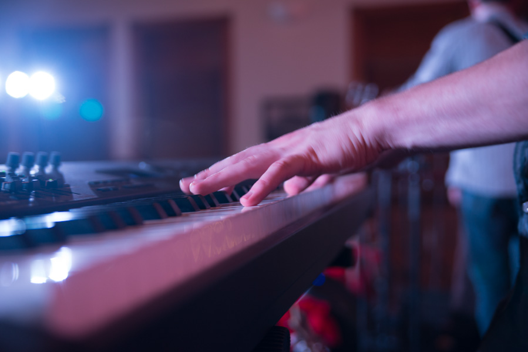

Bluegrass Piano.com
Having piano (or keyboard) as part of Bluegrass is fantastic, and a part of Bluegrass that I would love to see grow and expand. Following are a few suggestions on how to play Bluegrass Piano/Keyboard. To start, though, learn the basics on the piano, and, of course, listen to Bluegrass music. The piano (keyboard) is a very flexible instrument. It can be its own band (there are many, many records that have been recorded like this), or it can be part of a band, obviously. Its range of sounds and styles (exciting, depressing, calming, energizing, and more) seems infinite, which makes it a perfect addition to the Bluegrass genre.
What is Bluegrass Piano?
It is not rocket science.
- Bluegrass Piano:
- A reasonably new style of piano that would come close to Southern Gospel piano, with a touch of country in it. It is typically played in a band setting with other Bluegrass instruments such as the guitar, bass, and fiddle, but is not limited to this. Often, lively and major (but perhaps a little bluesy) techniques, with an apparent lack of the sustain pedal would describe this style overall. As one would expect with Bluegrass music, harder arrangements are almost always better, as long as it doesn't muddy the water (sound).
- "Can the keyboard or piano be part of a Bluegrass band?"
- Absolutely it can be a part! While this question is currently subjective, and will be until the piano becomes more "officially" accepted into Bluegrass bands, it can play a fantastic, and crucial role in a Bluegrass band. Looking through the history of Bluegrass, the keyboard, while not popular, has been a part at different times. It's relative style can compliment a bluegrass band in a way that would surprise many. I've played my keyboard in a contemporary Bluegrass band for over a year now, and wouldn't go back on it for a moment. I mentioned "relative" style: this is an important note because not all styles work with Bluegrass. Refer above and below to more details on style.
How can I learn Bluegrass Piano or keyboard?
At this point I'm working on that part as well, and don't think I'll ever "arrive". Personally, I have worked more, in general, on Southern Gospel, and Gospel styles.
I have liked and used Roger Bennet's Southern Gospel Piano Course Volume 1 & 2 which I would recommend going through.
Playing from written music:
I believe that playing by ear should be accompanied with the knowledge of how to play from a book. If all one knows how to do is play out of the book, I think their abilities become somewhat limited. They can improve this by learning to write and arrange music, but while I know people who can picture the music and write it, that is something I simply can't do. I have to play it in order to really hear what it sounds like. As a result, this has led me to see that ultimately, one does themselves a huge service by knowing how to play by ear, and out of the book.
If you do well with reading music, and are looking to learn the Bluegrass piano style, I recommend getting Stan Whitmire's Old Time Gospel Piano book
. Yes, it doesn't say it's "Bluegrass", but many of the principles in those arrangements are excellent. It is some intense piano music, and if you aren't proficient with reading music when you start into the piano book, I think you will be when you finish. Be sure to get Stan Whitmire's companion album, Old Time Gospel Piano
so you can appreciate what it is supposed to sound like. It is available as an MP3 for easy and quick download, and is a very enjoyable listen.
Theory:
I am a huge fan of practical theory. Some theory gets rather high-level, and that's fine for those who want to dedicate the time it requires to learn it, but for me, I'd rather learn the fundamentals, and then turn on my keyboard, and make it do something. I highly recommend, MusicTheory.net as an excellent source of almost all of the theory that I think is needed to learn the piano. Pick up their exercise app and instruction app if you can. They are very well done, and worth the small price.
Playing by ear:
If you are learning to improve your play-by-ear capabilities, I think you should consider getting Jermaine Griggs Gospel Keys 101. While I have most of his products, I am of the opinion that this outshines the rest of them in a big way. It is for beginners, but I would recommend it to anyone that is not familiar with playing the piano by hear or doesn't use the Nashville number system.
One thing to note is that I'm not necessarily talking about the "ear-training" that is taught in some of the classical circles where one looks at a note on a page, or perhaps even hears it, and then knows what that note sounds like, or what it is, respectively. While that is an excellent skill, I am primarily speaking of the type of playing by ear that comes natural for most people. For example, almost everyone knows the tune of "Mary Had a Little Lamb", or "Amazing Grace". With that in mind, it wouldn't take most people long at all to play that melody on the piano. In the same sense, it isn't hard to then build on that skill and to mix the creative side of the mind, and learned part to create something beautiful.
Piano vs. Keyboard:
If you find yourself evaluating whether to learn on (or purchase) a keyboard or piano, I have two main thoughts on this issue:
- If it has at least 66 white/black keys, works, is in tune, and sounds like a piano you should be set.
- If it doesn't have at least 66 white/black keys, doesn't work, isn't in tune, or doesn't sound like a piano, try to find something that does work (or tune the piano).
I suppose it's stating the obvious, but also, if you don't care for keyboards, I'd recommend getting a piano instead.
Yes, you read that correctly: it doesn't matter. What matters is that it functions and that you like it. There is no doubt that pianos are "the real thing", but I have personally played many pianos and would clearly take my Yamaha S90 XS synthesizer over at least 90% of them. At this point, I remember playing only about 2 grand pianos, both Yamaha, I believe, and one quite old, that I would prefer over my keyboard. However, for me, portability is just as important as the sound and feel of the instrument.
How to choose what is right for you:
Anyone that has spent much time around either pianos or keyboards can tell you that there are good and bad ones of both. And neither option is a perfect solution in all situations and for all people. Below, you will find some practical pros and cons to keyboards and pianos. For this, we will assume that we are comparing a mid-grade standup piano to a mid-grade, weighted action, electric piano such as the Yamaha P-155. Again, these are only general principles and would vary wildly between instruments. Also, don't underestimate the power of pianos being "the real thing".
Piano pros:
- It has an excellent, real action that is true to touch.
- The sound is very natural and quite vibrant.
- It looks appealing.
- The damper pedal provides precise control.
- It does not require electricity or amplification equipment.
Piano cons:
- It isn't very portable.
- There is no volume control.
- Requires regular tuning.
Keyboard pros:
- It has a remarkably real action, and quality sound.
- Takes up a small amount of space, is light, and can be stored regularly if needed.
- Extremely portable.
- Can practice without making much noise by wearing headphones.
- Can play other instruments such as strings, electric piano, and harpsichord.
- Built in metronome (does this count?).
- Able to do MIDI recording.
- Allows automatic transposing. (I think this could be counted as a con, but can be convenient when needed).
- No need for tuning, and can be micro-tuned to match other band instruments.
- On-the-fly volume adjustment, especially with the option of an expression pedal.
Keyboard cons:
- The sound is only as good as the amplification equipment, such as speakers.
- Is certainly not the "real" thing, and the keys can feel "plastic" to some.
- Requires electricity and amplification equipment such as speakers or headphones.
- Can be far more difficult to repair.
About Jesse Maxwell
I’m Jesse Maxwell, and my goal is to glorify the Lord Jesus, my Savior, through playing music. I believe that He is the One Who gives me the grace to learn the piano and improve. I play (mostly) keyboard with my family and enjoy the Bluegrass part of it but also greatly enjoy the worship styles of piano as well.
I played several more mainstream Bluegrass instruments before settling on the piano. When my family started learning to play Bluegrass, I learned the Hammered Dulcimer, which is actually similar in principle to the piano. Overall it is a very nice sounding instrument, but it didn't stick with me. I ended up learning to play the resonator guitar, or dobro, for 2 years. The Lord clearly led me to move away from the dobro, and I then started working on learning the mandolin.
I took piano lessons from my brother when I was roughly 6-7 years old, but after I had moved to learning a more Bluegrass-style instrument, I thought I had left the piano for good. During the time that I was practicing the mandolin, though, I become interested in piano again after hearing an artist play it with a Bluegrass band.
After some consideration, in November of 2010, I acquired my first, and current, keyboard: a Yamaha S90 XS synthesizer. With over 1,000 different voices, fantastic performance ability, and great customization, it has proved an excellent choice. In addition, the key action, which feels extremely true, allows me to switch to the piano without having to adjust my technique. Most of the time I stand when playing the keyboard, but haven’t noticed that making a difference when I sit down to play a piano. Probably 99% of my music practice time now goes toward the keyboard.
After returning to the piano, I have never looked back. I find the piano to be an extremely versatile and expressive instrument, which almost constantly poses new challenges to me. Learning it has been an incredible, awesome challenge, and I hope that the resources that I link to from here are helpful if you are beginning this journey.
Last updated: 03/19/2014
Some links on this page may be affiliate links. Thank you for supporting this site.
Designed and developed by Jesse Maxwell